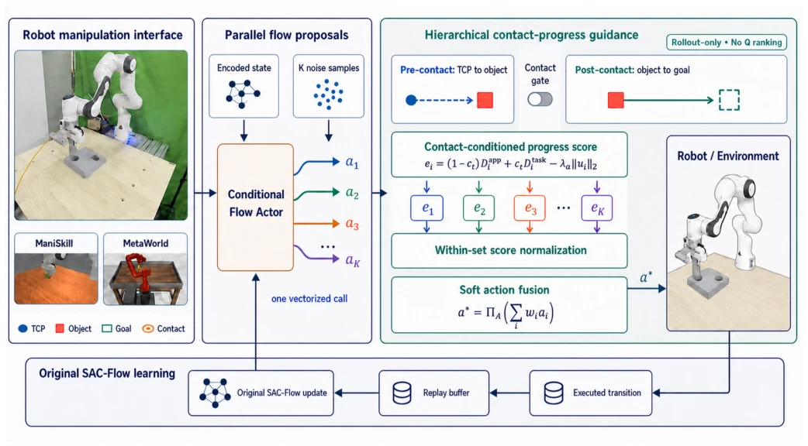
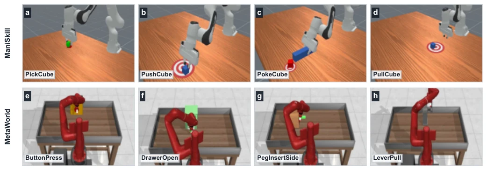
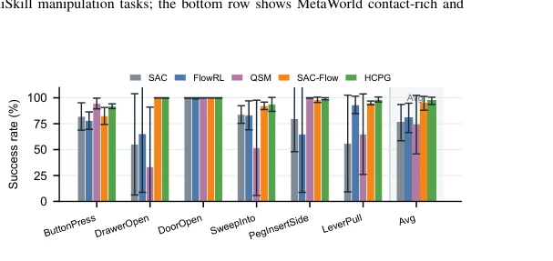
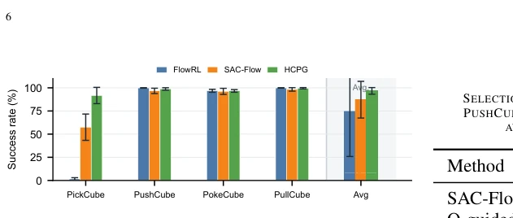
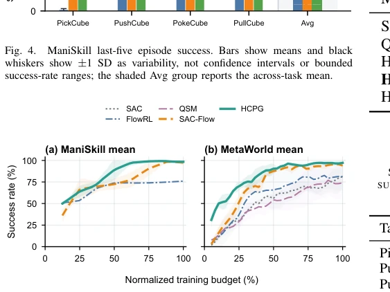
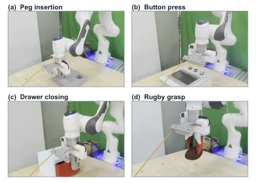

This paper equips SAC-Flow with a "geometric intuition" plugin. While Flow policies generating multimodal actions is beneficial, selecting which one to execute is a pitfall. The authors discovered that Q-value ranking tends to fail at the moment of contact, so they devised an HCPG module to compute progress scores based on the relative position between the TCP and the object. This approach is clever, requiring no retraining and directly modifying inference logic, constituting a "zero-cost" performance gain. However, this method relies heavily on task geometric structure; if a task lacks clear target points or objects, how is this "contact progress" calculated? Real-world experiments are indeed stable, but in simulation, some tasks are already saturated, leaving limited room for improvement. Overall, it is a lightweight but somewhat "selective" optimizer suitable for manipulation tasks with distinct geometric features.
Flow policies can generate multiple action candidates, but only one can be selected during execution. Existing methods commonly use the Critic's Q-value for ranking [7][9], but this is prone to errors on actions with insufficient training data coverage, especially at moments of contact transition such as grasping and insertion, where long-term return estimation is inaccurate. Although SAC-Flow [5] combines Flow and SAC, candidate selection still relies on the Critic, causing data collection to depend on potentially inaccurate value estimation. The authors observed that geometric relationships between the TCP, objects, and targets in manipulation tasks can provide local progress signals, which are more reliable than long-term Q-values. Therefore, the research motivation is how to utilize these prior geometric information to improve the quality of candidate action selection without modifying learning objectives, addressing the Critic error inheritance problem.
方法Method
整体流程是：状态输入 Flow Actor 生成 K 个动作候选，HCPG 模块打分后融合为最终动作，再存入 Replay Buffer 更新 SAC-Flow。创新点有三：1. 对象中心适配器：提取 TCP、物体、目标位置，定义接近向量和目标向量。2. 分层接触进度评分：通过接触标志切换评分目标，接触前算 TCP 到物体距离，接触后算物体到目标距离，用一阶距离缩减量打分。3. 集合内归一化与软嵌入：对 K 个分数做标准化，再用温度参数控制加权融合，避免硬 Argmax。整个过程无新增学习参数，不改变 Actor/Critic 损失，仅作为推理时的解析选择器，确保学习目标不变。
The overall workflow is: state input to Flow Actor generates K action candidates, the HCPG module scores and fuses them into the final action, which is then stored in the Replay Buffer to update SAC-Flow. There are three innovations: 1. Object Center Adapter: extracts TCP, object, and target positions, defining approach vectors and target vectors. 2. Hierarchical Contact Progress Scoring: switches scoring targets via a contact flag; before contact, calculates TCP-to-object distance, after contact calculates object-to-target distance, scoring based on the first-order distance reduction amount. 3. Intra-set Normalization and Soft Embedding: normalizes the K scores, then uses a temperature parameter to control weighted fusion, avoiding hard Argmax. The entire process involves no new learning parameters, does not alter Actor/Critic loss, and serves only as an analytical selector during inference, ensuring the learning objective remains unchanged.

Fig. 1. Robot-centric overview of HCPG-Flow. Physical and simulated manipulation tasks provide state and contact cues to a conditional flow actor, which generates K = 4 full-dimensional action proposals in one vectorized call. HCPG switches the active progress target at contact, scores the proposals, and forms a bounded soft action without critic-based ranking. The executed transition enters the original replay buffer and SAC-Flow update; the learning objectives remain unchanged.
Simulations were conducted on ManiSkill and MetaWorld, totaling 10 tasks, with baselines including SAC-Flow, FlowRL, etc. HCPG improved the average success rate by 9.5% on ManiSkill and 2.4% on MetaWorld. Real-world experiments on Franka tested 4 tasks, with success rate increasing from 91.7% to 98.3%, and successful steps reduced by 17.4%. Ablation studies show K=4 is optimal, and Q-value guided ranking is less stable than geometric scoring. Results demonstrate that geometric guidance is more effective than relying solely on the Critic in contact tasks, with significant improvements especially in tasks like PickCube that require distinguishing between approach, grasp, and transport phases.

Fig. 2. Representative successful simulation rollouts. The top row shows ManiSkill manipulation tasks; the bottom row shows MetaWorld contact-rich and articulated manipulation tasks.

Fig. 3. MetaWorld last-five episode success. Bars show means and black whiskers show ±1 SD as variability, not confidence intervals or bounded success-rate ranges; the shaded Avg group reports the across-task mean.

Fig. 4. ManiSkill last-five episode success. Bars show means and black whiskers show ±1 SD as variability, not confidence intervals or bounded success-rate ranges; the shaded Avg group reports the across-task mean.

Fig. 5. Simulation learning progress for all main-table methods. Each panel averages all tasks in the corresponding suite within each seed after linearly aligning normalized training budgets. Lines show means over seeds 0, 1, and 2; shaded regions denote ±1 SD.

Fig. 6. Successful HCPG-Flow completion states on the physical Franka platform: (a) the peg is fully inserted, (b) the button is depressed, (c) the drawer is closed, and (d) the rugby ball is securely grasped above the support surface.